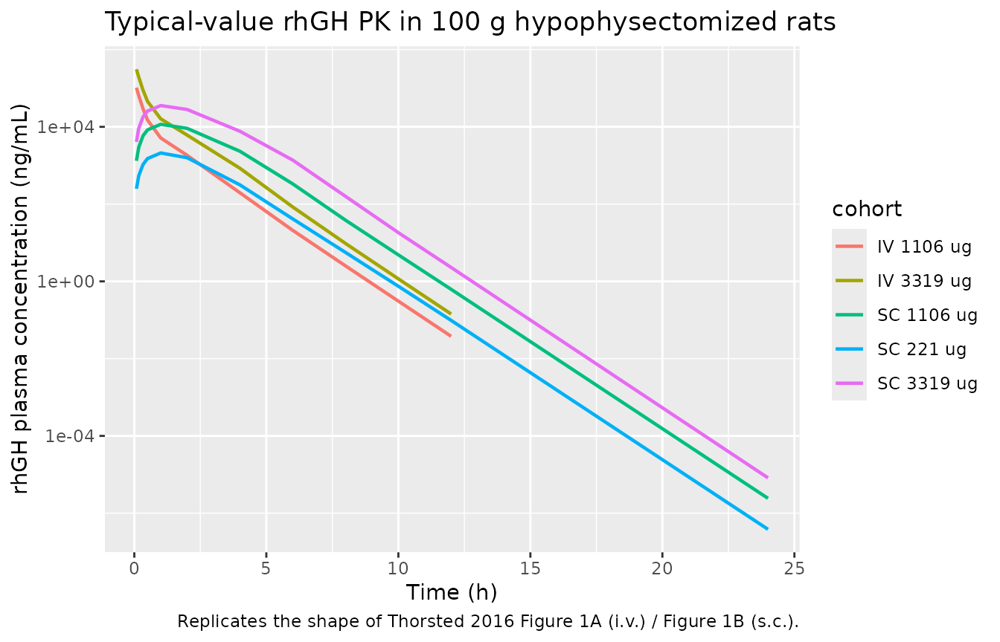
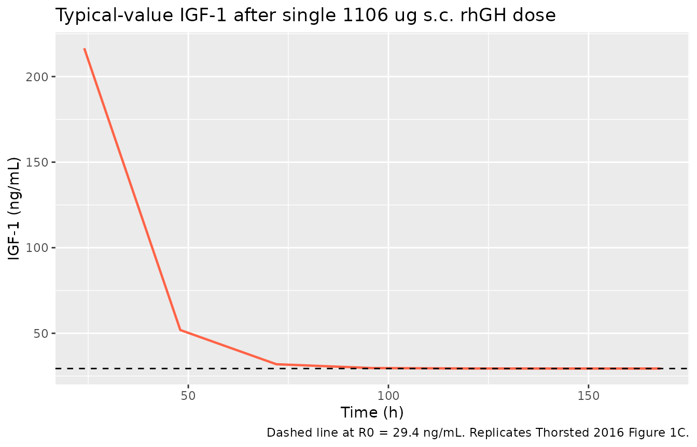
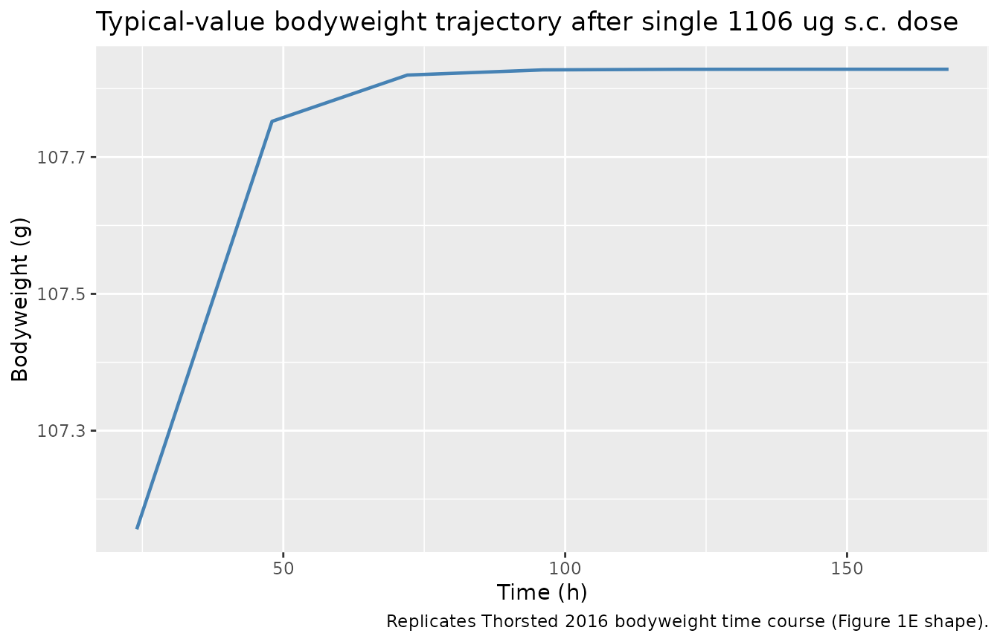

Somatropin / rhGH preclinical rat (Thorsted 2016)
Source:vignettes/articles/Thorsted_2016_somatropin_rat.Rmd
Thorsted_2016_somatropin_rat.RmdModel and source
mod <- readModelDb("Thorsted_2016_somatropin_rat")
ui <- rxode2::rxode(mod)
#> ℹ parameter labels from comments will be replaced by 'label()'
cat(ui$reference, sep = "\n")
#> Thorsted A, Thygesen P, Agerso H, Laursen T, Kreilgaard M. Translational mixed-effects PKPD modelling of recombinant human growth hormone - from hypophysectomized rat to patients. Br J Pharmacol. 2016 Jun;173(11):1742-55. doi:10.1111/bph.13473.- Description: Preclinical (hypophysectomized Sprague-Dawley rat). Mixed-effects PKPD model for recombinant human growth hormone (rhGH / somatropin) describing PK as a two-compartment model with parallel linear (CL) and Michaelis-Menten (Vmax, KM) elimination, parallel first-order subcutaneous absorption (ka1 direct path, ka2 delayed through one transit compartment, with bioavailabilities F1 and F2), an indirect response model for IGF-1 induction (stimulation of kin via a three-compartment effect-delay chain feeding an Emax/EC50 stimulation), and a linear bodyweight-gain model driven by IGF-1 above baseline. Reference rat body weight is 0.1 kg (100 g) and the allometric exponents (0.75 / 1.0) are fixed.
- Article: Br J Pharmacol 173(11):1742-55
The Thorsted 2016 paper develops a mixed-effects PKPD model for recombinant human growth hormone (rhGH, INN: somatropin) in hypophysectomized male Sprague-Dawley rats following i.v. and s.c. administration. The PK is a two-compartment model with parallel linear clearance (CL) and Michaelis-Menten (Vmax, KM) elimination, and parallel first-order s.c. absorption (a direct ka1 path and a transit-delayed ka2 path with bioavailabilities F1 and F2). The PD has two layers: an indirect-response model for IGF-1 (Emax stimulation of kin via a three-compartment effect-delay chain), and a linear bodyweight-gain submodel driven by IGF-1 above the per-animal baseline.
Population
str(ui$population)
#> List of 10
#> $ species : chr "rat (Sprague-Dawley, hypophysectomized; male, 90-110 g, age 6-8 weeks)"
#> $ n_subjects : int 230
#> $ n_studies : int 6
#> $ age_range : chr "6-8 weeks at study start (hypophysectomized at 4 weeks; acclimatized 1-2 weeks)"
#> $ weight_range : chr "90-110 g (approximately 0.1 kg)"
#> $ sex_female_pct: num 0
#> $ disease_state : chr "Hypophysectomized rat model of growth hormone deficiency (pituitary gland surgically removed at age 4 weeks); p"| __truncated__
#> $ dose_range : chr "rhGH 11-3319 ug as i.v. tail-vein bolus or s.c. injection into the scruff of the neck; six study cohorts in tot"| __truncated__
#> $ regions : chr "Denmark (Novo Nordisk A/S, Maaloev)"
#> $ notes : chr "230 male hypophysectomized Sprague-Dawley rats from Taconic M&B (Ejby, Denmark); 304 rhGH plasma concentrations"| __truncated__The rat cohort is 230 male hypophysectomized Sprague-Dawley rats (90-110 g, approximately 0.1 kg) acclimatized 1-2 weeks after surgery and acclimatization (Thorsted 2016 Methods, Animals). The dataset combines one single-dose PKPD study (i.v. tail-vein and s.c. neck routes, sampling from pre-dose through 48 h) and five multiple-dose PD studies (daily s.c. injections through 28 days, with PD samples retained only through 168 h because of anti-drug-antibody formation thereafter; see Thorsted 2016 Methods, Data exclusion and Table 1).
Source trace
Per-parameter source citations are also recorded as inline comments
in
inst/modeldb/specificDrugs/Thorsted_2016_somatropin_rat.R.
| Equation / parameter | Value | Source |
|---|---|---|
| Structural PKPD diagram | n/a | Thorsted 2016 Figure 2 |
| CL - linear clearance | 0.0285 L/h | Table 2 |
| Vmax - non-linear elimination capacity | 11.5 ug/h | Table 2 |
| KM - non-linear elimination half-saturation | 358 ug/L | Table 2 |
| Vc - central volume | 0.0069 L | Table 2 |
| Q - inter-compartmental clearance | 0.0101 L/h | Table 2 |
| Vp - peripheral volume | 0.0081 L | Table 2 |
| ka1 - direct SC absorption rate | 3.02 1/h | Table 2 |
| ka2 - transit-delayed SC absorption rate | 1.22 1/h | Table 2 |
| F1 - bioavailability ka1 path | 0.0316 | Table 2 |
| F2 - bioavailability ka2 path | 0.833 | Table 2 |
| kout - IGF-1 degradation rate | 0.0913 1/h | Table 2 |
| R0 - baseline IGF-1 | 29.4 ng/mL | Table 2 |
| Emax (PKPD-study cohort) | 9.88 | Table 2 |
| EC50 - half-maximal stimulation | 16.3 ug/L | Table 2 |
| kCPLAG - GH effect-delay rate | 0.599 1/h | Table 2 |
| SLD - bodyweight-gain slope | 0.000309 g per ng/mL per h | Table 2 |
| WT_BASE - baseline bodyweight | 106 g | Table 2 |
| Allometric exponent CL / Q / Vmax | 0.75 (fixed) | Methods / Results |
| Allometric exponent Vc / Vp | 1.0 (fixed) - rat | Methods / Results |
| Allometric exponent ka1 / ka2 | -0.25 (fixed) | Methods |
| IIV CL | 11.6% CV | Table 2 |
| IIV Vp | 18.4% CV (correlated with CL, rho = -0.568) | Table 2 / Results |
| IIV ka2 | 9.3% CV | Table 2 |
| IIV R0 | 17.0% CV | Table 2 |
| IIV WT_BASE | 5.2% CV | Table 2 |
| Proportional residual error (PK) | 0.233 | Table 2 |
| Additive residual SD (PK) | 0.279 ng/mL | Table 2 |
| Additive residual SD (IGF-1, PKPD) | 21.3 ng/mL | Table 2 |
| Additive residual SD (BW) | 2.38 g | Table 2 |
Virtual cohort
The original observed data are not publicly available. The
simulations below use a small virtual cohort of 100-g rats. SC dosing
requires two dose events per administration (one into the depot
compartment, one into depot2; the model’s f(depot) and
f(depot2) bioavailabilities split the systemic input
between the two parallel absorption paths). IV dosing uses a single
event into the central compartment.
set.seed(20260516)
make_sc_cohort <- function(n, dose_ug, regimen_label, id_offset = 0L,
obs_grid = c(0, 0.08, 0.17, 0.33, 0.5, 1, 2, 4, 6,
8, 10, 12, 24)) {
ids <- id_offset + seq_len(n)
doses_depot <- tidyr::expand_grid(id = ids, time = 0,
evid = 1, amt = dose_ug,
cmt = "depot")
doses_depot2 <- doses_depot |> dplyr::mutate(cmt = "depot2")
obs <- tidyr::expand_grid(id = ids, time = obs_grid) |>
dplyr::mutate(evid = 0, amt = 0, cmt = "Cc")
events <- dplyr::bind_rows(doses_depot, doses_depot2, obs) |>
dplyr::arrange(id, time, evid) |>
dplyr::mutate(WT = 0.1, cohort = regimen_label)
events
}
make_iv_cohort <- function(n, dose_ug, regimen_label, id_offset = 0L,
obs_grid = c(0, 0.08, 0.17, 0.33, 0.5, 1, 2, 4, 6,
8, 10, 12)) {
ids <- id_offset + seq_len(n)
doses <- tidyr::expand_grid(id = ids, time = 0,
evid = 1, amt = dose_ug,
cmt = "central")
obs <- tidyr::expand_grid(id = ids, time = obs_grid) |>
dplyr::mutate(evid = 0, amt = 0, cmt = "Cc")
events <- dplyr::bind_rows(doses, obs) |>
dplyr::arrange(id, time, evid) |>
dplyr::mutate(WT = 0.1, cohort = regimen_label)
events
}
events <- dplyr::bind_rows(
make_iv_cohort(40, 1106, "IV 1106 ug", id_offset = 0L),
make_iv_cohort(40, 3319, "IV 3319 ug", id_offset = 40L),
make_sc_cohort(40, 221, "SC 221 ug", id_offset = 100L),
make_sc_cohort(40, 1106, "SC 1106 ug", id_offset = 200L),
make_sc_cohort(40, 3319, "SC 3319 ug", id_offset = 300L)
)
stopifnot(!anyDuplicated(unique(events[, c("id", "time", "evid", "cmt")])))Typical-value simulation
The chunk below uses rxode2::zeroRe() to suppress
between-animal variability and produce typical-value (population-mean)
trajectories for rhGH plasma concentration after single i.v. and s.c.
doses.
mod_typ <- rxode2::zeroRe(mod)
#> ℹ parameter labels from comments will be replaced by 'label()'
sim_typ <- rxode2::rxSolve(mod_typ, events = events,
keep = c("cohort", "WT")) |>
as.data.frame()
#> ℹ omega/sigma items treated as zero: 'etalcl', 'etalvp', 'etalka2', 'etalr0', 'etalwtbase'
#> Warning: multi-subject simulation without without 'omega'
sim_typ |>
dplyr::filter(time > 0) |>
ggplot(aes(time, Cc, colour = cohort)) +
geom_line(size = 0.8) +
scale_y_log10() +
labs(x = "Time (h)", y = "rhGH plasma concentration (ng/mL)",
title = "Typical-value rhGH PK in 100 g hypophysectomized rats",
caption = "Replicates the shape of Thorsted 2016 Figure 1A (i.v.) / Figure 1B (s.c.).")
#> Warning: Using `size` aesthetic for lines was deprecated in ggplot2 3.4.0.
#> ℹ Please use `linewidth` instead.
#> This warning is displayed once per session.
#> Call `lifecycle::last_lifecycle_warnings()` to see where this warning was
#> generated.
IGF-1 and bodyweight from a single SC dose
A single s.c. dose drives a delayed IGF-1 induction (through the three-compartment effect-delay chain) and a small bodyweight increase proportional to the IGF-1 excursion above the per-animal baseline.
events_pd <- make_sc_cohort(
n = 10, dose_ug = 1106, regimen_label = "SC 1106 ug",
id_offset = 1000L,
obs_grid = c(0, 24, 48, 72, 96, 120, 144, 168)
)
sim_pd <- rxode2::rxSolve(mod_typ, events = events_pd,
keep = c("cohort", "WT")) |>
as.data.frame()
#> ℹ omega/sigma items treated as zero: 'etalcl', 'etalvp', 'etalka2', 'etalr0', 'etalwtbase'
#> Warning: multi-subject simulation without without 'omega'
sim_pd |>
dplyr::filter(time > 0) |>
dplyr::distinct(time, .keep_all = TRUE) |>
ggplot(aes(time, IGF1)) +
geom_line(size = 0.8, colour = "tomato") +
geom_hline(yintercept = 29.4, linetype = "dashed") +
labs(x = "Time (h)", y = "IGF-1 (ng/mL)",
title = "Typical-value IGF-1 after single 1106 ug s.c. rhGH dose",
caption = "Dashed line at R0 = 29.4 ng/mL. Replicates Thorsted 2016 Figure 1C.")
sim_pd |>
dplyr::filter(time > 0) |>
dplyr::distinct(time, .keep_all = TRUE) |>
ggplot(aes(time, BW)) +
geom_line(size = 0.8, colour = "steelblue") +
labs(x = "Time (h)", y = "Bodyweight (g)",
title = "Typical-value bodyweight trajectory after single 1106 ug s.c. dose",
caption = "Replicates Thorsted 2016 bodyweight time course (Figure 1E shape).")
NCA validation of rhGH after i.v. dosing
PKNCA is used to compute simulated rhGH NCA parameters for the i.v. cohorts, where a clean concentration profile makes NCA most interpretable. The model includes parallel linear and Michaelis-Menten elimination, so the apparent half-life is a function of the concentration range sampled.
sim_nca <- sim_typ |>
dplyr::filter(time > 0, grepl("^IV ", cohort)) |>
dplyr::select(id, time, Cc, cohort)
dose_df <- events |>
dplyr::filter(evid == 1, grepl("^IV ", cohort)) |>
dplyr::select(id, time, amt, cohort)
conc_obj <- PKNCA::PKNCAconc(sim_nca, Cc ~ time | cohort + id)
dose_obj <- PKNCA::PKNCAdose(dose_df, amt ~ time | cohort + id)
intervals <- data.frame(
start = 0,
end = 12,
cmax = TRUE,
tmax = TRUE,
aucinf.obs = TRUE,
half.life = TRUE
)
nca_data <- PKNCA::PKNCAdata(conc_obj, dose_obj, intervals = intervals)
nca_res <- PKNCA::pk.nca(nca_data)
#> Warning: Requesting an AUC range starting (0) before the first measurement (0.08) is not allowed
#> Requesting an AUC range starting (0) before the first measurement (0.08) is not allowed
#> Requesting an AUC range starting (0) before the first measurement (0.08) is not allowed
#> Requesting an AUC range starting (0) before the first measurement (0.08) is not allowed
#> Requesting an AUC range starting (0) before the first measurement (0.08) is not allowed
#> Requesting an AUC range starting (0) before the first measurement (0.08) is not allowed
#> Requesting an AUC range starting (0) before the first measurement (0.08) is not allowed
#> Requesting an AUC range starting (0) before the first measurement (0.08) is not allowed
#> Requesting an AUC range starting (0) before the first measurement (0.08) is not allowed
#> Requesting an AUC range starting (0) before the first measurement (0.08) is not allowed
#> Requesting an AUC range starting (0) before the first measurement (0.08) is not allowed
#> Requesting an AUC range starting (0) before the first measurement (0.08) is not allowed
#> Requesting an AUC range starting (0) before the first measurement (0.08) is not allowed
#> Requesting an AUC range starting (0) before the first measurement (0.08) is not allowed
#> Requesting an AUC range starting (0) before the first measurement (0.08) is not allowed
#> Requesting an AUC range starting (0) before the first measurement (0.08) is not allowed
#> Requesting an AUC range starting (0) before the first measurement (0.08) is not allowed
#> Requesting an AUC range starting (0) before the first measurement (0.08) is not allowed
#> Requesting an AUC range starting (0) before the first measurement (0.08) is not allowed
#> Requesting an AUC range starting (0) before the first measurement (0.08) is not allowed
#> Requesting an AUC range starting (0) before the first measurement (0.08) is not allowed
#> Requesting an AUC range starting (0) before the first measurement (0.08) is not allowed
#> Requesting an AUC range starting (0) before the first measurement (0.08) is not allowed
#> Requesting an AUC range starting (0) before the first measurement (0.08) is not allowed
#> Requesting an AUC range starting (0) before the first measurement (0.08) is not allowed
#> Requesting an AUC range starting (0) before the first measurement (0.08) is not allowed
#> Requesting an AUC range starting (0) before the first measurement (0.08) is not allowed
#> Requesting an AUC range starting (0) before the first measurement (0.08) is not allowed
#> Requesting an AUC range starting (0) before the first measurement (0.08) is not allowed
#> Requesting an AUC range starting (0) before the first measurement (0.08) is not allowed
#> Requesting an AUC range starting (0) before the first measurement (0.08) is not allowed
#> Requesting an AUC range starting (0) before the first measurement (0.08) is not allowed
#> Requesting an AUC range starting (0) before the first measurement (0.08) is not allowed
#> Requesting an AUC range starting (0) before the first measurement (0.08) is not allowed
#> Requesting an AUC range starting (0) before the first measurement (0.08) is not allowed
#> Requesting an AUC range starting (0) before the first measurement (0.08) is not allowed
#> Requesting an AUC range starting (0) before the first measurement (0.08) is not allowed
#> Requesting an AUC range starting (0) before the first measurement (0.08) is not allowed
#> Requesting an AUC range starting (0) before the first measurement (0.08) is not allowed
#> Requesting an AUC range starting (0) before the first measurement (0.08) is not allowed
#> Requesting an AUC range starting (0) before the first measurement (0.08) is not allowed
#> Requesting an AUC range starting (0) before the first measurement (0.08) is not allowed
#> Requesting an AUC range starting (0) before the first measurement (0.08) is not allowed
#> Requesting an AUC range starting (0) before the first measurement (0.08) is not allowed
#> Requesting an AUC range starting (0) before the first measurement (0.08) is not allowed
#> Requesting an AUC range starting (0) before the first measurement (0.08) is not allowed
#> Requesting an AUC range starting (0) before the first measurement (0.08) is not allowed
#> Requesting an AUC range starting (0) before the first measurement (0.08) is not allowed
#> Requesting an AUC range starting (0) before the first measurement (0.08) is not allowed
#> Requesting an AUC range starting (0) before the first measurement (0.08) is not allowed
#> Requesting an AUC range starting (0) before the first measurement (0.08) is not allowed
#> Requesting an AUC range starting (0) before the first measurement (0.08) is not allowed
#> Requesting an AUC range starting (0) before the first measurement (0.08) is not allowed
#> Requesting an AUC range starting (0) before the first measurement (0.08) is not allowed
#> Requesting an AUC range starting (0) before the first measurement (0.08) is not allowed
#> Requesting an AUC range starting (0) before the first measurement (0.08) is not allowed
#> Requesting an AUC range starting (0) before the first measurement (0.08) is not allowed
#> Requesting an AUC range starting (0) before the first measurement (0.08) is not allowed
#> Requesting an AUC range starting (0) before the first measurement (0.08) is not allowed
#> Requesting an AUC range starting (0) before the first measurement (0.08) is not allowed
#> Requesting an AUC range starting (0) before the first measurement (0.08) is not allowed
#> Requesting an AUC range starting (0) before the first measurement (0.08) is not allowed
#> Requesting an AUC range starting (0) before the first measurement (0.08) is not allowed
#> Requesting an AUC range starting (0) before the first measurement (0.08) is not allowed
#> Requesting an AUC range starting (0) before the first measurement (0.08) is not allowed
#> Requesting an AUC range starting (0) before the first measurement (0.08) is not allowed
#> Requesting an AUC range starting (0) before the first measurement (0.08) is not allowed
#> Requesting an AUC range starting (0) before the first measurement (0.08) is not allowed
#> Requesting an AUC range starting (0) before the first measurement (0.08) is not allowed
#> Requesting an AUC range starting (0) before the first measurement (0.08) is not allowed
#> Requesting an AUC range starting (0) before the first measurement (0.08) is not allowed
#> Requesting an AUC range starting (0) before the first measurement (0.08) is not allowed
#> Requesting an AUC range starting (0) before the first measurement (0.08) is not allowed
#> Requesting an AUC range starting (0) before the first measurement (0.08) is not allowed
#> Requesting an AUC range starting (0) before the first measurement (0.08) is not allowed
#> Requesting an AUC range starting (0) before the first measurement (0.08) is not allowed
#> Requesting an AUC range starting (0) before the first measurement (0.08) is not allowed
#> Requesting an AUC range starting (0) before the first measurement (0.08) is not allowed
#> Requesting an AUC range starting (0) before the first measurement (0.08) is not allowed
#> Requesting an AUC range starting (0) before the first measurement (0.08) is not allowed
knitr::kable(summary(nca_res),
caption = "Simulated NCA for rhGH after i.v. bolus (typical-value rat).")| start | end | cohort | N | cmax | tmax | half.life | aucinf.obs |
|---|---|---|---|---|---|---|---|
| 0 | 12 | IV 1106 ug | 40 | 103000 [0.000] | 0.0800 [0.0800, 0.0800] | 0.659 [0.000] | NC |
| 0 | 12 | IV 3319 ug | 40 | 309000 [0.000] | 0.0800 [0.0800, 0.0800] | 0.659 [0.000] | NC |
Assumptions and deviations
Dual Emax collapsed to the single-dose value. Thorsted 2016 Table 2 reports two separate Emax estimates: 9.88 for the single-dose PKPD cohort and 23.9 for the repeated-dose PD cohorts (the latter explained in the Discussion as a physiological adaptation - increased GH-receptor / GH-binding-protein expression with repeated dosing). The packaged model carries only the single-dose Emax = 9.88 because that is the value the paper itself carries forward to the human projection (Table 3). Users who want to simulate the repeated-dose PD cohort response should override
lemaxwithlog(23.9)inini().Dual IGF-1 residual SD collapsed to the single-dose value. Symmetrically, Table 2 reports two additive residual SDs for the IGF-1 model: 21.3 ng/mL for the PKPD cohort and 78.2 ng/mL (with 58.8% CV IIV on the residual term) for the PD cohorts. The packaged model uses 21.3 (the PKPD-cohort value) without IIV on residual. Override
addSd_IGF1(and addetalAddSdIGF1IIV if needed) to recover the PD-cohort residual model.Parallel-absorption dosing convention. SC doses require two event records per administration in user-supplied datasets (one with
cmt = "depot"and one withcmt = "depot2", sameamt); the model’sf(depot)andf(depot2)bioavailability functions partition the systemic input across the two paths. Provide a single event record withcmt = "central"for i.v. doses.Bodyweight is reported in grams. The model state
bwand the residual erroraddSd_BW = 2.38are in grams (matching Table 2), while theWTcovariate used for allometric scaling is in kg per the nlmixr2lib convention. SetWT = 0.1for a 100-g reference rat.